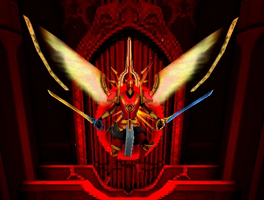

Gabriel, cast down from Heaven, has become the Apostate of Hate. His armor retains its original design but now glows with a fiery red hue, representing his rage. His wings, once blue, are now a deep yellow, and his once-holy halo has taken on golden accents. He wields his twin blades, Justice & Splendor, with a ferocity that reflects his inner turmoil.
In Phase 2, Gabriel returns to his original silver and gold armor, but his wings and halo now feature golden highlights, signifying his divine yet corrupted state.

Combat Overview
As Gabriel becomes consumed by his hatred, his combat style becomes more aggressive and relentless. He now wields his twin swords, Justice & Splendor, and uses them in rapid and powerful combos. His attacks are fast and mobile, but they don't track very well, requiring the player to focus on dodging and parrying. Gabriel’s attack structure is similar to his previous fight but with key differences that make him more dangerous, especially in close-range combat. After taking significant damage, he enters Phase 2, where he summons light projections of his swords and enhances his mobility with teleportation.
Attacks
Phase 1
Light Combo: Gabriel reverses his grip on his swords, dashes toward V1, and performs 4 quick slashes before following up with a long-range thrust. Only the final thrust is parryable. In Phase 2, Gabriel teleports before the thrust unless his real swords are in flight.
Medium Combo: Gabriel raises Splendor in his right hand and swings it 3 times, followed by a spinning, dashing slice with both swords. This combo can only be initiated at close range, and only the final slice is parryable. In Phase 2, Gabriel teleports before the finishing slice unless his real swords are in flight.
Heavy Combo: Gabriel rears back both swords behind his left shoulder and cleaves twice, then quickly combines them and throws them at V1. Both swings and the thrown sword can be parried. In Phase 2, Gabriel will teleport before the throw, and on Violent difficulty, he will teleport before the second swing, unless his swords are in mid-flight.
Sword Throw: Gabriel combines his swords horizontally, raises them above his head, and throws them at V1. These swords track V1 slightly and can be parried. Unlike his axe throw, the sword projectiles stay in flight until they hit something or Gabriel teleports them back. In Phase 2, Gabriel will teleport right before throwing his swords.
Phase 2 (Violent and Above)
Summoned Swords: At the start of Phase 2, Gabriel summons a shield of swords that surrounds him. This can be parried. On Violent difficulty, Gabriel will summon the shield of swords at every other taunt.
Light Projection: In Phase 2, Gabriel manifests light projections of his twin blades, Justice & Splendor, and continues his attacks without needing to teleport the real swords back. However, he will not teleport mid-combo unless initiating another sword throw.
Enraged
Gabriel’s rage has fully consumed him, amplifying the speed and ferocity of his attacks. While still using his twin swords, his combos become more frequent and unpredictable. He has no limit to how many sword throws he can perform between taunts, making him a relentless opponent. His mobility is also enhanced, with teleportation allowing him to avoid attacks and quickly reposition.
Difficulty Changes
HARMLESS: Gabriel’s attacks are slower and less aggressive. He will initiate combos with more predictable timing, and his sword throws are easier to parry.
LENIENT: Gabriel’s speed is slightly increased, and he uses his sword throws more frequently. The sword shield attack only appears once per phase.
VIOLENT: Gabriel becomes much faster and uses his sword throws more frequently. His sword shield attack appears every other taunt, and his teleportation during sword throws becomes more erratic.
BRUTAL: Gabriel’s attacks are at their peak speed and aggression. He will teleport even more frequently, and his combos will be harder to avoid. The summoned sword shield attack can now be difficult to parry, and his sword throws are nearly constant.
Strategies & Tips
Master the Parry: Gabriel’s sword throws can be parried, and mastering this mechanic will give you the upper hand in combat. His sword throws track V1, but can still be interrupted with a precise parry.
Stay Close, But Not Too Close: While Gabriel’s combos are devastating in close-range combat, getting too close will leave you open to his heavy combos. Keep a safe distance, but stay ready to close in when he uses his sword throws.
Be Ready for Teleports: Gabriel’s teleportation can throw off your rhythm, especially when he uses it during sword throws. Be vigilant and adapt to his unpredictable movement.
Exploit Phase 1: Phase 1 gives you a chance to familiarize yourself with his combos. Use this phase to learn his patterns and exploit openings.
Phase 2 Strategy: Phase 2 is much more challenging, with Gabriel using light projections and teleporting frequently. Focus on parrying his sword shield attack, and use mobility to dodge his sword throws.